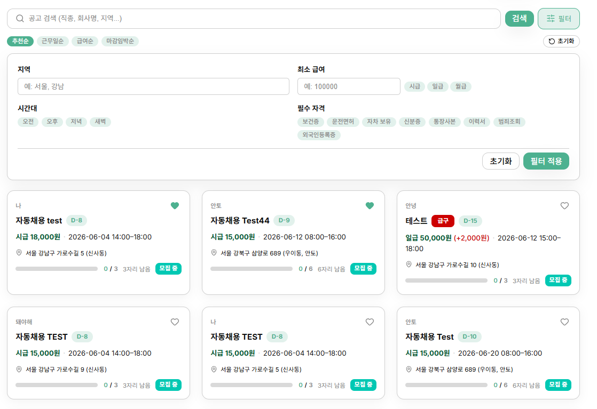
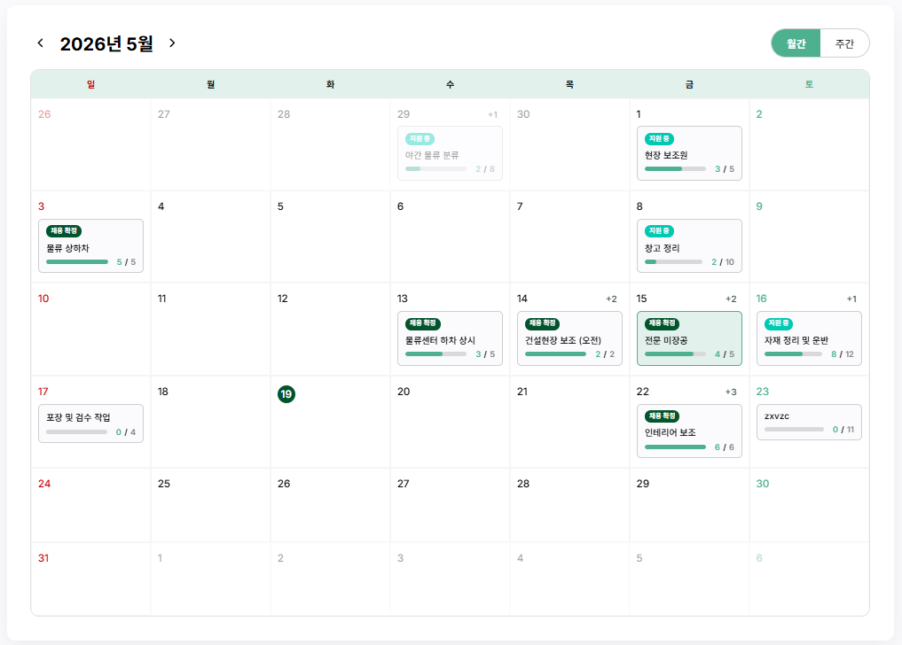
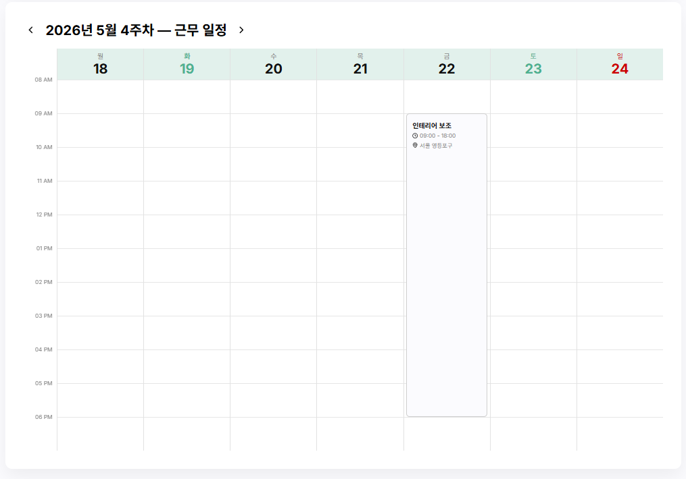
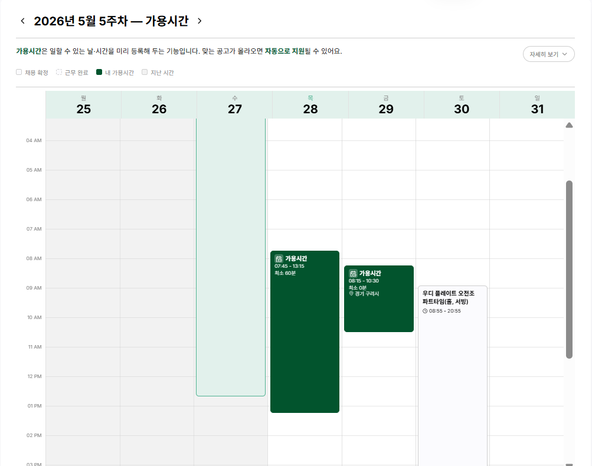
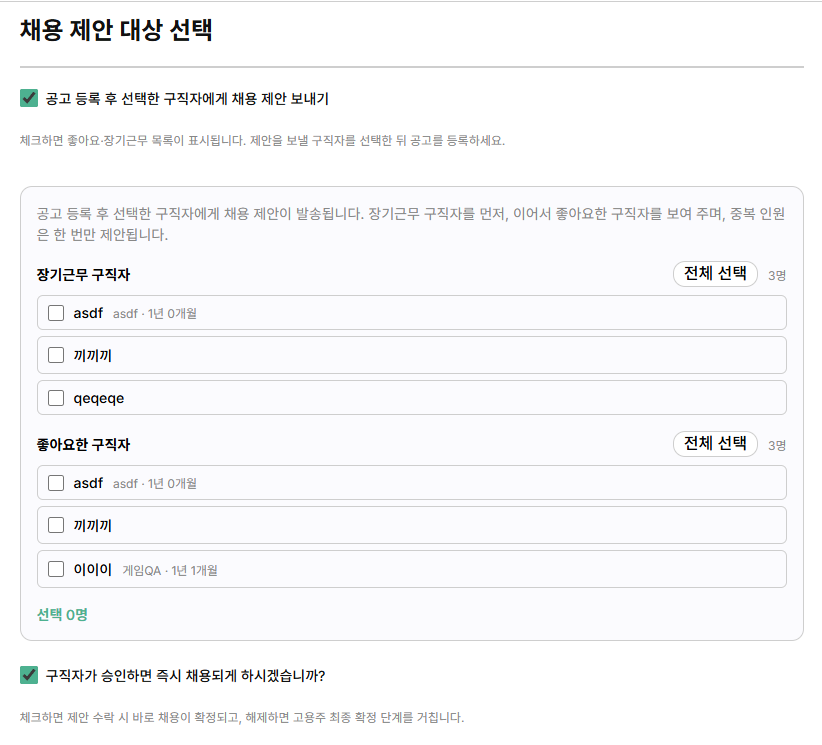
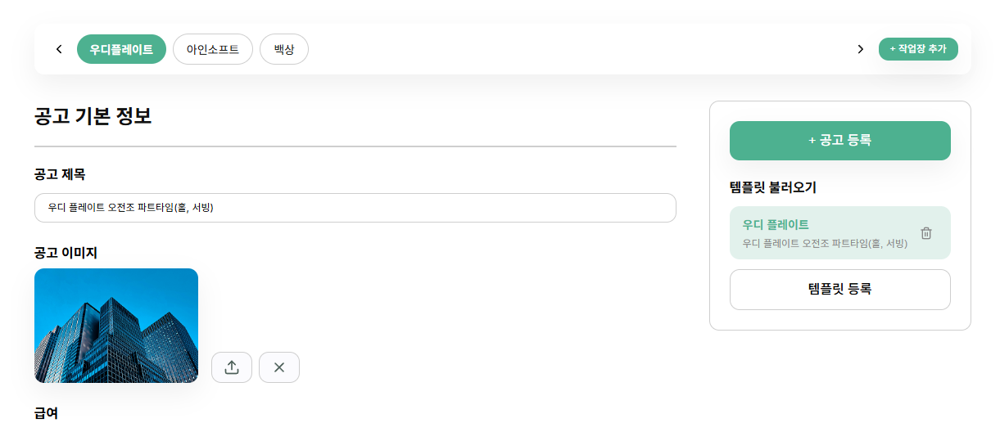
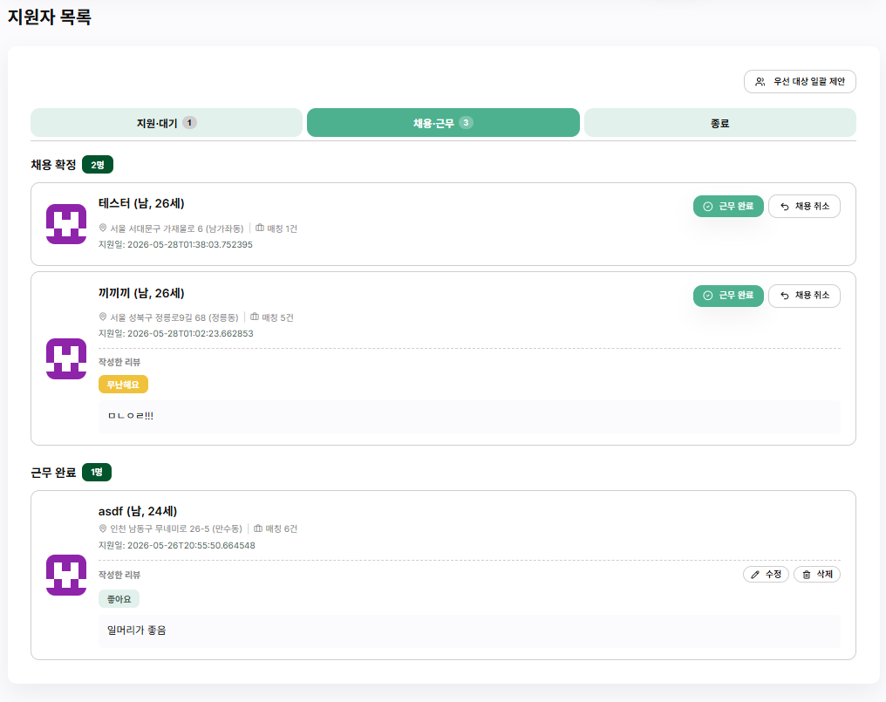

일용직 특화 공고 탐색
- 내부 추천 알고리즘, 필터링, 무한 스크롤로 빠르게 공고를 탐색합니다.
- 공고 검색 및 다중 태그 필터링 — 업종, 지역, 요일, 시간대, 급여
- 데이터 기반 개인화 추천 — 지원 이력, 경력, 지역, 좋아요 기반 맞춤 공고

일용직 시장의 구조적 비효율을 해결합니다
일용직 구인·구직에 최적화된 기능들을 제공합니다
단기·일용직 공고만 필터링하여 한곳에서 탐색. 맞춤 추천 알고리즘으로 추천순 조회가 가능하며, 날짜·지역·직종별 검색과 무한 스크롤로 빠르게 원하는 일자리를 찾을 수 있습니다.
급전이 필요한 구직자를 위해 최소한의 단계로 빠르게 지원. 이력서 등록 후 원클릭으로 즉시 지원이 완료됩니다.
고용주 전용 캘린더 대시보드로 일별 필요 인력과 배치 현황을 시각적으로 파악하고, 공고 등록부터 지원자 확정까지 한 화면에서 관리합니다.
고용주는 조건에 맞는 지원자에게 일괄 제안을 보내고, 시스템 자동 매칭 결과를 알림으로 받을 수 있습니다. 지원부터 제안·채용까지 파이프라인을 한곳에서 이어 갑니다.
지원 접수, 제안 수락, 채용 확정, 근무 완료 등 주요 이벤트를 SSE 기반으로 즉시 알려 드립니다. 헤더 알림과 알림 센터에서 놓치는 일 없이 진행 상황을 확인할 수 있습니다.
구직자는 이력서를 간편하게 작성·관리하고, 고용주는 지원자 목록을 확인하며 수락·거절 상태를 실시간으로 관리합니다.
실제 화면으로 확인하는 잇다의 핵심 기능







프론트엔드와 백엔드의 아키텍처를 소개합니다
client/src/
├── app/ # 진입점, 라우터, 레이아웃, 가드
├── pages/ # 페이지 컴포넌트
│ ├── auth/ (로그인, 회원가입)
│ ├── JobPost/ (공고 목록·CRUD)
│ ├── Resume/ (이력서 CRUD)
│ ├── dashboard/ (대시보드·캘린더·알림·인재풀)
│ └── admin/ (매니저: 유저·신고·지표)
├── widgets/ # header, calendar, landing…
├── features/ # offer, application, review…
├── entities/ # 도메인 모델
│ ├── jobPost, resume, application
│ ├── notification, schedule, workplace
│ ├── review, report, manager
│ └── workerAvailability
└── shared/ # 공통 UI, API, 유틸server/src/main/java/com/itda/
├── config/ # Security, JWT, S3, Async
├── controller/ # REST API
│ ├── Auth, User, JobPost, Application
│ ├── Resume, Workplace, Notification
│ ├── Review, Report, Calendar, Like
│ └── ManagerUser, ManagerMetrics
├── service/ # 비즈니스 로직
│ ├── JobPostRanking, AutoMatch
│ └── Notification (SSE)
├── repository/ # JPA Repository
├── entity/ # JPA 엔티티
│ ├── User, Employer, Manager
│ ├── JobPost, Resume, Application
│ ├── Workplace, WorkerAvailability
│ └── Notification, Report, Review
├── dto/ # Request/Response DTO
├── enums/ # 열거형 상수
└── exception/ # 전역 예외 처리잇다를 구성하는 기술들입니다
잇다를 만든 팀원들입니다
Frontend
Frontend
Backend
Backend
Backend